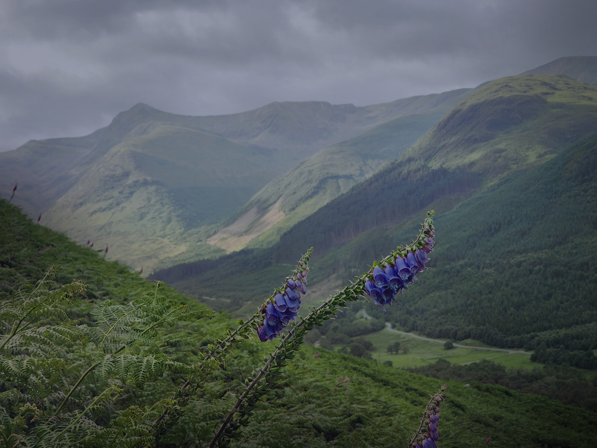
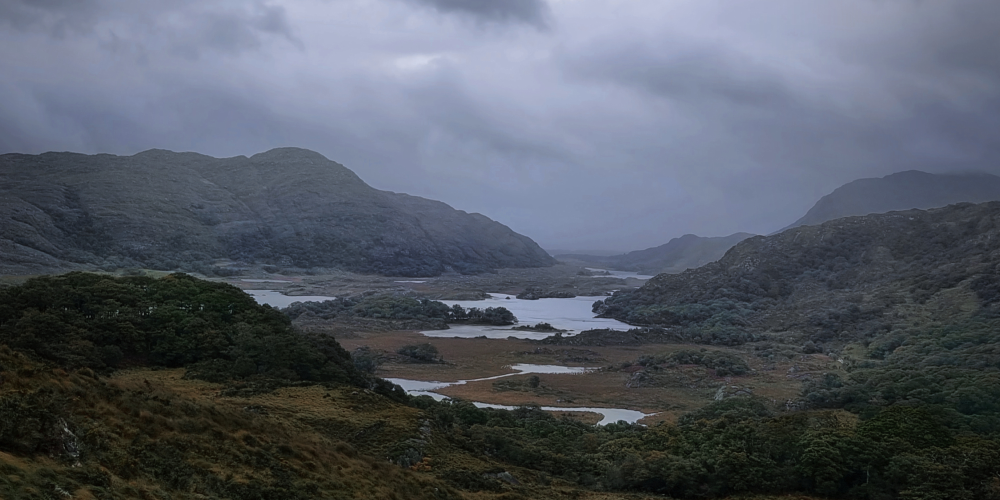

De redigerade bilderna
I den här uppgiften i Grafisk teknik för webb (DT200G) har jag redigerat en bildserie i Photopea och byggt en webbplats för att visa resultatet. Jag har arbetat med ljus, kontrast och färg för att ge bilderna en dov, skogig känsla. Under Bildredigering kan du jämföra tre av bilderna med sina original och läsa om hur jag bland annat tog bort en person vid vattenfallet och färgade om blommorna från lila till blått.


